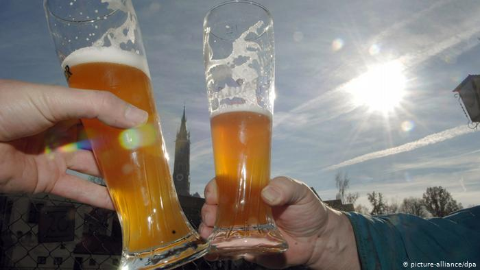

10 фактов о немецком пиве
По традиционному рецепту
Согласно баварскому закону о чистоте пива, принятому в 1516 году,
для производства этого напитка должны использоваться только вода,
ячменный солод, дрожжи и хмель. С 1987 года в Германии стали
продавать пиво, изготовленное в странах ЕС с добавлением других
ингредиентов. Сами же немецкие пивовары до сих пор варят пиво по
традиционному рецепту.

Столица пива Берлин
Особенно много пивоварен в Берлине. В последние годы пивоварением
стали активно заниматься и иммигранты. Особой славой в немецкой
столице пользуются такие пивоварни, как Schoppe Bräu, Heidenpeters,
Ale Mania, BrauKunstKeller, Crew Republic.
Немцы - чемпионы мира?
Во всем мире производится 15 тысяч сортов пива. Треть из них - в
Германии. Полторы тысячи пиврварен насчитывается здесь. Однако не
известно, являются ли немцы чемпионами мира по потреблению пива. По
статистике, на душу населения в ФРГ приходится около 110 литров пива
в год. Между тем, в Чехии производится ежегодно до 150 литров пива
на душу населения. Другое дело, что много идет на экспорт.
Местные особенности
Заказывая в немецком ресторане пиво, укажите конкретный сорт. Иначе
вам обязательно подадут один из местных: в Мюнхене - традиционное
для баварцев пшеничное пиво (Weizenbier), в Кельне - кельнское пиво
(Kölsch), а в Гамбурге - пиво бренда Astra. Но дюссельдорфское
альтбир (Alt-Bier), например, в кельнских пивных вы напрасно будете
заказывать: Кельн и Дюссельдорф поглядывают друг на друга свысока.
Пиво из правильной посуды
Для каждого сорта немецкого пива предназначен особый сосуд. Kölsch,
например, пьют из специальных тонких стаканов (Kölner Stange)
вместимостью 0,2 литра, пшеничное Weizenbier - из высоких
поллитровых, а то и литровых стаканов, расширяющихся кверху, а Pils
- из бокалов в форме тюльпана.
Крепкие сорта
В большинстве сортов немецкого пива содержится примерно пять
процентов алкоголя. Зато в Баварии пить пиво нужно осторожно. В
производимом там пиве содержание алкоголя составляет порой шесть
процентов. Между прочим, традиционный баварский завтрак дополняет
кружка светлого нефильтрованного пива (Helles). Так что не
удивляйтесь, если в Мюнхене вас им будут угощать поутру.

Пивные коктейли
Не все немцы предпочитают пить пиво в чистом виде. Смешивать его с
другими напитками в Германии любят даже утонченные гурманы. Самый
популярный в пивной коктейль - это радлер (Radler). В его состав
входят пиво и лимонад. Кое-кто также любит смесь пива с кока-колой.
Пиво на берлинский лад
Что касается приготовления пивных коктейлей, то больше всех,
пожалуй, тут изощряются берлинцы. В столичных ресторанах вам могут
предложить берлинское белое пиво (Berliner Weisse) даже в сочетании
с сиропом из малины или подмаренника душистого. Напиток приобретает
ярко-розовый или ядовито-зеленый цвет. Подают его в широких рюмках
из тонкого стекла.
В Германии пить пиво можно почти везде
В отличие от многих других стран, в Германии пить пиво разрешается
даже прямо на улице. Но вот в общественном транспорте - к примеру, в
Кельне и Берлине - употребление алкоголя, в том числе и пива,
запрещено.
Пивные бутылки не выбрасываются
Защита окружающей среды для немцев - одна из важнейших задач. И
звание чемпиона мира по утилизации отходов и переработке мусора
Германия действительно заслужила. В ФРГ бутылки из-под пива и других
напитков, как правило, не выбрасываются, а сдаются обратно в
магазин. В стоимость товара включен залог за тару (Pfand). Автор:
Кейт Мюзер, Наталия Королева